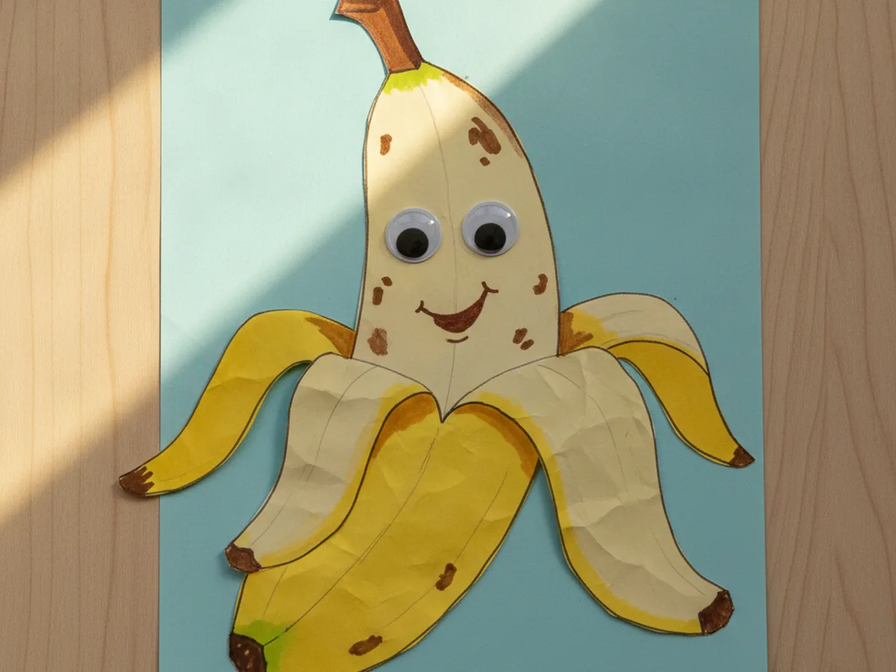
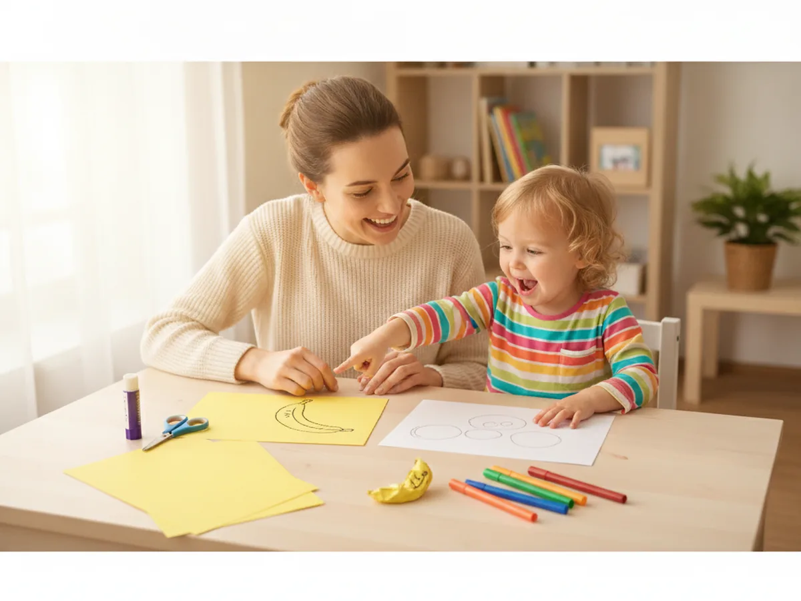
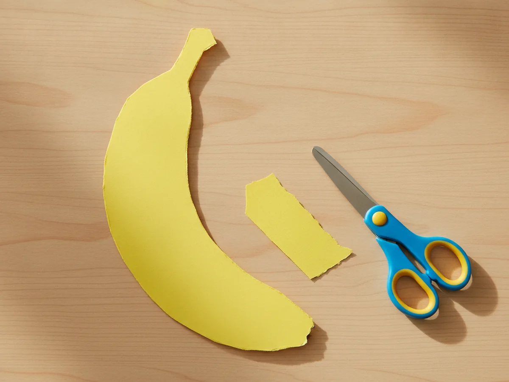
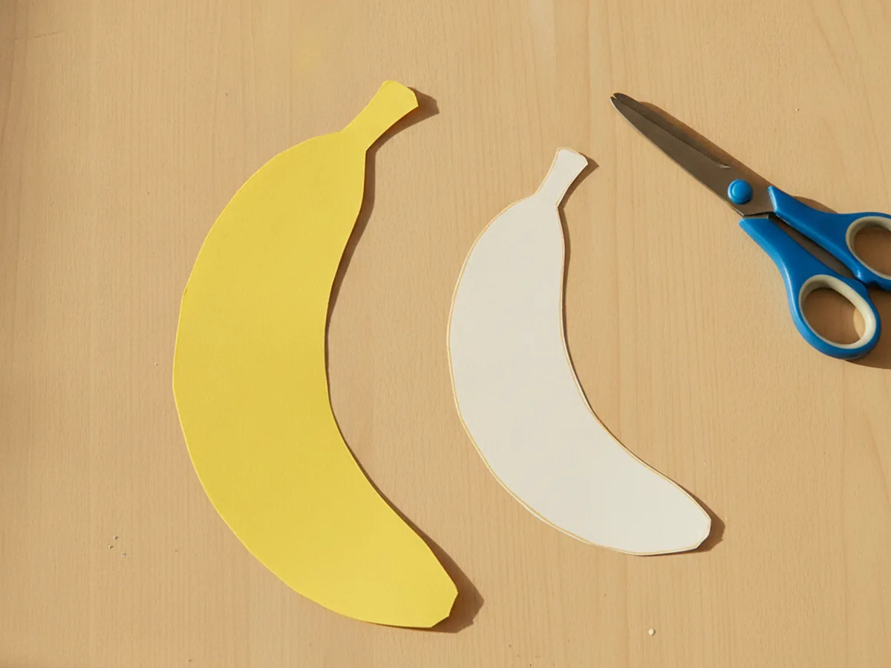
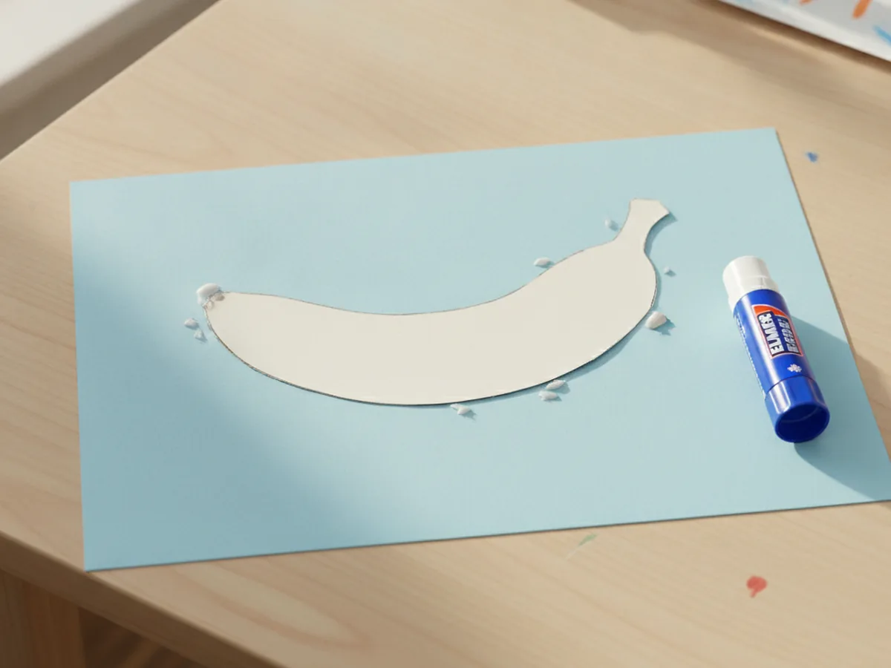
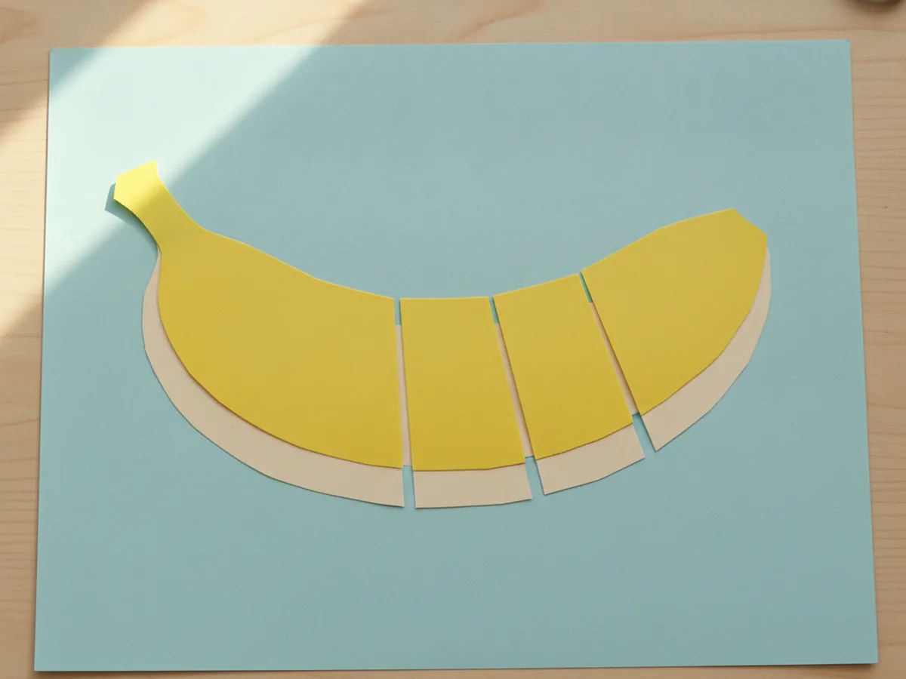
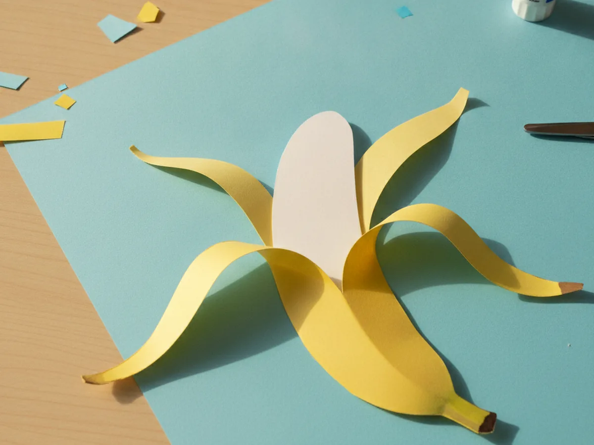
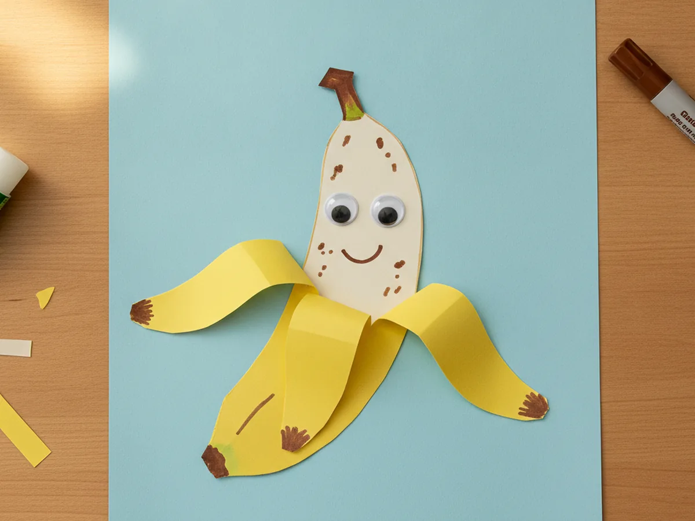

Few snacks make a little one grin quite like a banana, so why not turn that cheerful yellow fruit into a craft you can make together? This easy banana craft paper project turns a few simple shapes into a playful paper banana that actually peels open to reveal the soft fruit hidden inside. It uses just paper, glue, and scissors, comes together in about thirty minutes, and ends with a sweet little craft your child will want to peel open again and again. Grab some yellow paper and let's make a happy paper banana right at the kitchen table! 🍌
Why Kids Love This Craft
The magic of this craft is the surprise. Kids adore lifting those yellow paper strips to find a smiling banana tucked inside, and that little peek-a-boo moment never seems to get old. They get to "peel" their snack just like a real one, which feels playful and just a touch silly. By the time they fold it open for the first time, you will probably hear a delighted little giggle. 😊
There is gentle learning hiding in the fun too. Cutting the long curved banana shape gives small hands good scissor practice, and folding the peel strips back helps with finger control and hand strength. Choosing the colors and adding a face encourages creativity, while the simple shapes keep everything well within reach for young crafters.
Best of all, this banana craft paper is wonderfully forgiving. The banana does not need to be a perfect curve, and a slightly wonky shape only makes it look more handmade and charming. It stays low-mess with just paper and a glue stick, so it is an easy yes on a busy afternoon, and it adapts to a range of ages. Older kids can cut every piece themselves, while a toddler can simply press the shapes down where you point, so everyone gets to join in.

What You'll Need
Here is everything you need for this easy banana craft paper, and most of it is probably already in your craft drawer.
- Construction paper, an assorted pack gives you yellow for the peel and brown for the stem and tips.
- White cardstock, a sturdy sheet makes the banana inside that peeks out when you open the peel.
- Washable glue sticks, for sticking the banana and peel onto the background.
- Child-safe scissors, for cutting the banana shape and the peel strips.
- Washable markers, for coloring the brown tips, a happy face, and little ripe spots.
- Googly eyes, optional, for giving your paper banana an extra cute face.
- A pencil, for lightly sketching the banana shape before cutting.
Step-by-Step Instructions
Ready to peel a paper banana? Follow these simple steps and you will have a fun, foldable fruit in no time, with a few helper tips along the way.
Step 1: Cut the Yellow Peel
Start with the outside of the banana, which is the part everyone recognizes. Fold a sheet of yellow construction paper in half, then draw a long curved banana shape along the fold, a bit like a smile. Cut it out while the paper is still folded so you get one tall, even banana outline. This bright yellow shape is the peel that hides the surprise inside this banana craft paper.

Step 2: Cut the Banana Inside
Now make the soft fruit that will hide under the peel. Cut a second banana shape from white or cream cardstock, just a little smaller and simpler than the yellow one. This pale shape is the part of your paper banana craft that peeks out when the peel opens, so it does not need any details yet. Set it next to the yellow peel and you will already see the banana coming to life.

Step 3: Glue the Banana to a Background
Lay down a background sheet in any color your child loves, then place the cream banana on top and glue it flat. Press it down with your fingers so the whole shape sticks nicely. This gives the fruit a cozy home to sit on before the peel goes over the top. Take a moment here to let your little one pick the background color, since small choices like that make the craft feel like their own.

Step 4: Cut the Peel Into Strips
Here is the clever part that makes the banana open. Take the yellow peel and cut three slits from the top straight down toward the bottom, stopping about an inch from the end so the strips stay joined together. Lay the yellow peel right on top of the cream banana, lining them up, then add glue only to that joined bottom section and press it down. The top of your banana craft paper is now three loose flaps ready to peel.

Step 5: Peel It Open
This is the moment your child has been waiting for. Gently take each yellow strip and fold it outward and down, curling the peel away from the center. As the three flaps open, the cream banana underneath is revealed, just like peeling a real one. Press a soft crease at the bottom of each strip so the peel stays open and shows off the fruit inside.

Step 6: Add the Finishing Touches
Time to bring your banana to life. Cut a small brown paper rectangle for the stem and glue it to the top, then use a marker to color the very tips brown like a ripe banana. Add a couple of googly eyes and a marker smile to the cream fruit, and dot on a few little brown spots if you like. Step back and admire the cheerful peel-open banana you made together. ✨

Variations to Try
Bunch of Bananas: Make three or four paper bananas and glue the stems together at the top to create a whole bunch. It is a fun way to practice counting, and a leafy green paper tab at the top makes the bunch look extra real.
Monkey's Favorite Snack: Pair the banana with a simple brown paper monkey face for a playful jungle scene. Your child can pretend to feed the monkey, which turns the finished craft into an easy little pretend-play toy.
Lift-the-Flap Counting Banana: Skip the face and write a number or letter on the cream banana inside instead. Folding the peel open to find the hidden number turns this paper banana craft into a sweet learning game for preschoolers.
Final Thoughts
This banana craft paper is one of those simple projects that gives back so much more than the few supplies it takes. It is quick, low-mess, and full of cheerful yellow, and that little peel-open surprise turns an ordinary afternoon into a giggly moment together. Whether you make one banana or a whole bunch, the real treasure is the time spent snipping, gluing, and peeling side by side. It is the kind of slow, screen-free craft that becomes a sweet little memory, and you end up with a playful keepsake your child will reach for again and again. 💛
I would love to see the happy paper banana your family makes. Tape it to the fridge, tuck it into a play kitchen, and most of all, savor this warm moment with your little one. Happy crafting, friend!
More Crafts You'll Love
If your little one enjoyed peeling this paper banana, these other sweet fruit crafts make the perfect next project: